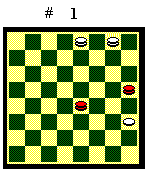
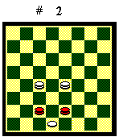
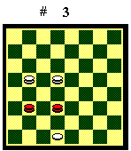
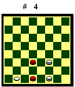
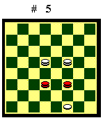
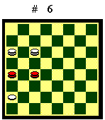
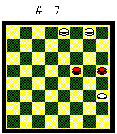
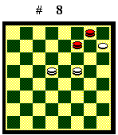
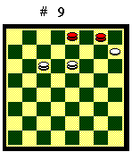

DUE DAME E UNA PEDINA CONTRO DUE DAME
Il finale di due dame e una pedina contro
due dame è molto importante perché è il punto di riferimento
per i finali sotto pezzo più complessi. Il Bianco per vincere deve
riuscire a portare le sue dame a ridosso della pedina e scortarla fino
alla damatura. Inoltre ha a disposizione la soluzione brillante del sacrificio
della pedina e conseguente chiusura delle dame nere. Una norma generale,
valida in ogni caso, è quella di mantenere unite le dame, in modo
che possano appoggiarsi a vicenda, durante la manovra. L'esito del finale
dipende dalla posizione della pedina e delle dame e, come tutti i finali
in cui, oltre alle dame, sono presenti delle pedine, la casistica è
vasta.
Ho preso in considerazione solo le posizioni che si presentano più comunemente in gioco vivo, cioè quelle in cui il Bianco ha la pedina su un lato, bloccata dalle dame nere, con le dame bianche più lontane. Non affronto invece altre posizioni (pedina non a lato, dame bianche a contatto con la pedina, dame disunite, ecc.), perché renderebbero troppo estesa la trattazione. Anche con tale limitazione, il finale è comunque piuttosto articolato. Ho diviso la presentazione in due capitoli: il primo in cui le dame nere hanno il favore della mossa sulle dame bianche, calcolando la mossa quando la pedina è a lato, nella posizione iniziale. Il secondo nel quale la mossa, calcolata allo stesso modo, la hanno le dame bianche. Per ogni posizione della pedina ho indicato le linee di gioco, cercando col commento di evidenziare i concetti chiave. Se la condotta di gioco è semplice o ricalca le precedenti, non la ho mostrata esplicitamente. Da ultimo ho riportato una posizione particolare (Sturgess), non molto frequente, ma che è utile conoscere.
Le dame nere hanno la mossa
Il finale è pari. In generale,
le dame nere sono avvantaggiate nella manovra, potendo respingere le dame
bianche, ma devono evitare il cambio con una dama bianca, perché
la mossa si inverte e ne segue un finale perdente per il Nero.
Pedina in 9, 16, 17, 24, 25, 29,
31 o 32

Il Nero deve semplicemente respingere le dame bianche senza farle avvicinare alla pedina. Se il Bianco ha la pedina in 24, 17 o 31 e si insedia nel biscacco, può tentare di forzare il cambio, ma il Nero, se gioca con attenzione, riesce sempre a sventare la minaccia. Se la pedina è in 29, il Bianco può anche muovere 29-25 e guadagnare la mossa. Il finale in questo caso è comunque pari, come si vedrà più oltre.Riporto solo il caso di pedina in 24, ma i concetti sono validi anche se è nelle altre posizioni.
Diagramma 1. Il Nero muove:
1.16-20 (se 19-15? il Bianco, con le dame nel biscacco superiore, ha la
possibilità di forzare il cambio con 4-7 e vince. La stessa minaccia
di cambio si ha con pedina bianca in 17 o 31 e dame bianche nel biscacco
inferiore) 2.4-7 19-23 3.7-12 20-16 4.3-7 16-20 5.12-16 20-15 6.7-4 15-20
(se 15-11?, 24-20, 11-15, 16-12 Bv) 7.4-8 20-15 8.16-12 15-20 il Bianco
non ha modo di avanzare la pedina. Pari.
Pedina in 30

Il Bianco, manovrando con le dame dalla parte del biscacco, riesce a liberare la pedina, e il Nero per pattare deve spingerla a sponda. La manovra del Nero è delicata e con alcuni trabocchetti.Diagramma 2. Il Bianco muove: 1.19-14 26-22 2.18-13 22-26 3.14-18 27-23 4.13-17 23-27 5.18-21 27-23 (se 26-29? Bv come da variante A) 6.21-25 26-22! (lascia il biscacco alle dame bianche) (A) 7.25-29 23-19 8.17-21 19-14 9.21-26 (se 21-25, 14-18 ecc. il Bianco deve accantonare la pedina a sponda e patta) 22-27 (se 14-19?, 30-27, X, 26-22 il Bianco sacrifica la pedina, chiude la dama nera e vince: una minaccia che il Nero non deve mai dimenticare! Se 22-18?, 30-27 le dame bianche prendono la mossa sulle nere, le allontanano e scortano la pedina a dama) 10.29-25 14-19 11.26-29 27-22 12.30-26 (se 25-21 19-14 si ripete la posizione precedente) 22-18 13.26-21 19-22 14.21-17 il Bianco accantona la pedina a sponda e patta.
(A) - 6.26-29? (sembra la mossa naturale per impedire alle dame bianche di raggiungere la pedina, invece dà la possibilità al Bianco di effettuare una manovra vincente!) 7.17-21 29-26 8.21-18 23-27 9.25-29 26-22 10.18-13 (se 18-14? 27-23, 30-26, 23-27 il Bianco non può continuare la manovra vincente con 26-21 per 22-18 e patta) 22-19 11.30-26 19-14 (se 27-22, 13-18, X, 26-22 Bv) 12.26-21 27-22 13.21-17 22-19 (se 14-18, 29-26 Bv) 14.29-25 (se 29-26? perde tempi preziosi, 19-15, 26-29, 15-11, 29-25, 11-6 ora il cambio 13-18 patta. Il Bianco non può più avanzare la pedina e patta) 19-22 (se 19-15, 13-18 Bv. Se 14-11, 13-18, 11-6, 17-13, 19-15, 18-14, 15-12, 25-21, 12-7, 21-17 ecc. il Bianco dama e vince) 15.25-21 22-19 16.13-18 14-11 17.17-13 11-6 18.21-17 19-15 19.18-14 6-2 20.13-10 ecc. il Bianco dama e vince.

Se le dame bianche sono abbastanza distanti, il Nero può impedire che si insinuino nel biscacco e pattare in modo semplice.Diagramma 3. Il Bianco muove:
13-17, 22-26 il Bianco non può prendere il biscacco e non ha modo
di avvicinarsi alla pedina. Pari.
Le dame bianche hanno la mossa
Il finale è vinto dal Bianco, che riesce a portarsi a ridosso della pedina e a liberarla, sia sfruttando il vantaggio della mossa, sia la possibilità di dare un cambio vincente.
Pedina in 29

Il Bianco ha la possibilità di minacciare il cambio, che lo porta a un finale vincente. La manovra è delicata.Diagramma 4. Il Nero muove: 1.30-26 (A) 2.23-27 22-18 3.27-30 26-22 4.30-26 (le dame bianche si sono portate a contatto con la pedina. Adesso inizia una manovra tipica, applicabile anche se la pedina fosse stata in 30 o 31, in cui le dame bianche, spostandosi fra la base e le sponde della damiera come in una danza, impediscono alle dame nere di attaccare la pedina, pena il cambio, e la scortano fino alla damatura) 22-19 5.31-27 18-13 6.27-30 19-14 7.26-22 13-10 (se 14-18, 29-25 Bv) 8.29-26 10-6 9.22-27 6-11 10.26-22 11-15 11.30-26 15-11 12.27-30 14-10 13.26-21 10-14 14.21-17 14-10 (se 14-18, 30-27 il Nero è forzato al cambio della dama con la pedina) 15.30-27 11-15 16.27-23 15-11 17.23-20 10-6 (se 11-7, 20-15, 10-6, 17-13, 7-3, 13-9, 3-7 [se 6-2, 15-11, 3-6, 11-14 ecc. il Bianco dama nel cantone], 9-5, 7-3, 5-2, 6-10, 15-11 il Bianco dama e vince) 18.22-19 11-7 19.20-16 7-4 (se 6-10 la pedina raggiunge la casa 8 e si va a una posizione Sturgess vincente per il Bianco) 20.17-13 4-7 21.19-14 6-2 22.13-9 il Bianco dama e vince.
(A) - 1.22-18 (il Nero non fa avvicinare
le dame bianche alla pedina, ma è costretto al cambio o a dividere
le dame) 2.31-27 18-21 3.27-22 30-26 4.23-19 21-25 (se 26-30, 29-25, 21-17,
25-21 Bv. Se 21-17, 22-18, 26-30, 19-14, 30-26, 18-21 ecc. il Nero divide
le dame e perde) 5.22-18 26-21 6.19-14 21-26 7.18-13 26-22 8.13-17 22-26
9.14-18 26-30 10.17-21 30-27 11.18-22 cambio e il Bianco vince.
Pedina in 31

Il Bianco può minacciare un cambio solo se poi riesce a portare la pedina sulla sponda sinistra, prendendo la mossa sulla dama nera e immettendosi in un finale vincente. La manovra è delicata.Diagramma 5. Il Nero muove:
1.22-27 (se 23-28, 14-19, 22-27, 15-20 ecc. il Nero divide le dame e perde)
2.15-19 23-28 3.14-18 27-30 4.19-22 30-27 (se 28-23, 31-28, X, 18-14 ecc.
il Bianco chiude le dame nere e vince) 5.22-26 27-30 6.18-21 30-27 (se
28-24, 21-17 poi la pedina si porta sulla sponda sinistra, la dama bianca
prende la mossa sulla nera e Bv. Se 28-23, 31-27, 23-19, 21-17 la dama
bianca ha la mossa sulla nera e Bv) 7.26-30 27-23 (se 27-22, 30-27 il Nero
perde una dama) 8.31-27 23-19 9.21-26 28-23 10.27-22 19-15 11.26-21 15-11
12.21-17 (il Bianco vince con la manovra vista per la pedina in 29) 23-20
13.30-27 20-15 14.27-23 11-6 15.23-19 15-11 16.17-13 6-2 17.22-18 11-6
18.19-14 2-5 19.13-9 5-1 (se 6-10, X, 18-13 il Bianco dama e vince) 20.14-19
(se 18-13?, 6-10 Nv) 6-11 21.18-13 il Bianco dama e vince.
Pedina in 30
Il Bianco ha la possibilità di minacciare sia il cambio che il baratto, entrambi vincenti. Inoltre ha a disposizione la manovra vista per la pedina in 29. E' il caso più semplice.
Il finale è pari, con una parziale eccezione se la pedina è in 24. Le dame bianche nella manovra, avendo la mossa, possono respingere le dame nere, ma generalmente devono evitare il cambio, perché la mossa si inverte e può seguirne un finale pari.
Pedina in 9, 16, 17 o 25

Il Nero, minacciando il cambio, che inverte la mossa e patta, impedisce che le dame bianche occupino le case adiacenti alla pedina e ne appoggino l'avanzata.Riporto il caso più delicato, con pedina in 25. Gli stessi concetti valgono anche se la pedina è nelle altre posizioni.
Diagramma 6. Il Nero muove:
1.18-22 2.9-13 17-21 3.10-14 (se, per appoggiare l'avanzata della pedina,
il Bianco occupa la casa 17 con 13-17, segue 22-26 e deve subito abbandonarla
per la minaccia del cambio 26-30) 22-26 (se 22-27?, 13-18, 21-17, 14-19
ecc. il Nero divide le dame e perde) 4.13-18 21-17 5.14-19.26-21 6.18-22
17-13 7.19-23 (il Bianco deve prendere casa 26 per avanzare la pedina)
13-9 8.22-27 (se 23-27, 21-18 il cambio patta) 21-18 9.27-30 18-21 (se
18-22, 25-21, 22-18 patta) 10.23-27 9-13 11.27-22 13-9 12.22-26 21-17 13.30-27
17-13 (se 9-13?, 27-22, 13-10, 22-18, 10-5, 25-21 cambio forzato dama pedina)
14.26-21 13-17 15.21-18 17-21 16.18-14 il Bianco non ha modo di avanzare
la pedina. Pari.
Pedina in 24

Questo finale è una parziale eccezione al caso di pedina a sponda: se il Bianco prende il biscacco con entrambe le dame, impedendo al Nero di occupare la casa 8, vince. Se il Nero invece, o perché in vantaggio di tempi o minacciando un cambio che inverte la mossa, riesce a occupare la casa 8, patta.Diagramma 7. Il Nero muove:
1.15-11? (se 15-12!, 3-6 [se 4-8, 16-20 il cambio patta], 12-8 il Nero
prende la casa 8 e patta con la manovra vista per la pedina in 25) 2.4-8
11-15 3.3-7 16-20 (se 15-19, 8-12, 16-20, 12-16, 20-23, 7-12, 19-14, 12-15,
14-18 15-11 il Bianco dama e vince) 4.7-12 15-19 5.12-16 20-15 (se 20-23,
8-12 ecc. il Bianco dama e vince) 6.16-20 15-11 7.8-12 19-14 8.20-16 11-6
9.24-20 14-18 10.12-7 18-14 11.20-15 il Bianco dama e vince.
Pedina in 32
La manovra del Nero è semplice: deve tenere una dama in 28 e spostarla in 24 e 31, per impedire alle dame bianche di occupare queste case. L'unico pericolo è farsi chiudere la seconda dama, perché il Bianco, sacrificando la pedina, lo chiuderebbe del tutto; se con la seconda dama raggiunge un biscacco, patta.
Posizione Sturgess

La posizione Sturgess si ha quando la pedina occupa la casa 8 e una dama nera in 4 le impedisce la damatura. E' una posizione che è bene conoscere perché può presentarsi in gioco vivo.Se le dame nere hanno la mossa in favore rispetto alle bianche e il Nero occupa stabilmente la casa 16, patta: non deve fare altro che spostare la dama fra le case 16 e 12. Il Bianco non ha modo di scalzarlo dalla posizione.
Diagramma 8. Il Nero muove: 1.7-12 2.14-19 12-16 3.19-23 16-12 4.15-20 12-16 5.20-15 16-12 6.23-19 12-16 7.15-11 16-12 8.11-6 12-16 9.6-3 16-12 10.19-14 12-16 11.14-11 16-12 il Bianco non può allontanare le dame nere. Pari.

Se invece il Bianco prende la casa 16, vince con una brillante manovra basata sul sacrificio della pedina.Diagramma 9. Il Bianco muove: 1.11-15 3-7 2.15-20 7-12 3.20-16 12-7 4.10-13 7-3 5.13-18 3-7 6.18-22 7-11 (A) 7.16-12 11-14 8.22-27 14-11 (se 14-19, 27-30, 19-14, 12-15 il Nero divide le dame, il Bianco chiude la dama nera fuori dal biscacco, forza la damatura della pedina e vince) 9.27-23 11-6 10.23-20 6-11 11.20-16 11-6 12.12-15 6-3 13.16-12 4-7 (se 3-6, 15-11 Bv) 14. 8-4 7x16 15.15-12 il Bianco vince.
(A) - 6.7-3 7.16-12 4-7 8.22-19 7x16 9.19-15 16-12 10.15-11 12-16 11. 8-4 16-20 12. 4-8 20-23 13.11-7 il Bianco vince.
Se le dame bianche hanno la mossa in favore rispetto alle nere, il Bianco prende la casa 16 e vince con la stessa brillante manovra.
Diagramma 9. il Nero muove:
1.3-7 2.10-14 7-12 3.14-19 12-16 4.11-15 16-12 5.15-20 12-16 6.19-23 16-12
7.20-16 12-7 (se 12-15, 16-12, 15-11, 23-19 ecc. il Nero divide le dame
o viene chiuso) 8.23-20 7-3 9.16-12 4-7 10.20-15 7x16 11.8-4 il Bianco
vince.